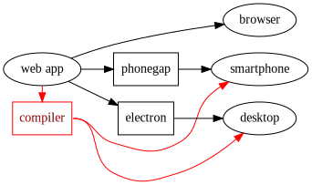
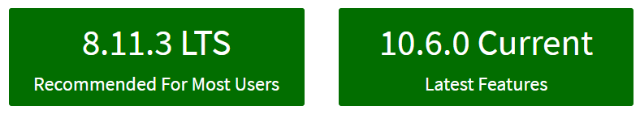
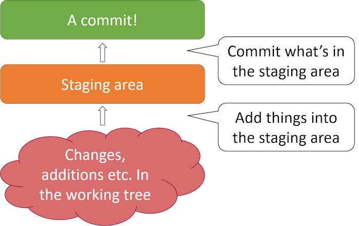
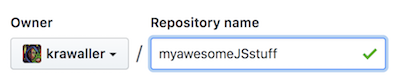

Introduction
Getting startedSections in this chapter
Your teacher
(Actually I stole this whole slide deck from a colleague)
Let's start with the most important - me!

Contact information:
- Email: carl@edument.se
- Blog: http://strangelyconsistent.org
- Twitter: carlmasak
- Phone: 072-3042141
Don't be a stranger!
But, fair warning - I spend my days singing this gospel:

Which means you'll have to put up with quotes like this:
If I were an evil overlord who wanted the world to adopt my programming language, I would make it the scripting language in web browsers
Course structure
How we'll go about things
The course is divided into several chapters, where you're currently in the first.

We access the chapters from an index, giving you a birds-eye view of the entire contents.
Each chapter has many sections:

In the printed material (or PDF) and in the presentation top-right corner, the slides are numbered X‑Y‑Z where...
Xis the number of the current chapterYis the number of the section section within that chapterZis the number of the slide within that section
From now on, all sections will be one of two types:
- Learning sections
- Exercise sections
When you see this symbol at the top of a section, that means it is a learning resource.
A short sentence or two will say what we want to learn.
This symbol means the section is an exercise.
Towards the bottom of the exercise sections you'll find a Definition of Done slide
- which gives you
- a check list
- to know when
- you are finished
Below that, if it is a coding exercise, you'll also find a link to a solution on a slide with this symbol.
The Web platform
a.k.a. the holy trinity
Let's set the scene by gaining a high-level understanding of the web platform!
The Web platform is really the combination of three separate technologies:

(There was also a dark time when Java applets were used in webpages, but we don't talk about that...)
(And we don't acknowledge the existence of flash either)

Traditionally, web apps looked like this:
Web tech was just the UI. The real coding was done in php / ruby / java / .NET.
But a modern SPA (Single Page Application) is more like this:

Additionally, web tech has escaped from the browser, since there are tools that can bundle web apps so they run elsewhere:

And blurring the lines even further - there are framework to compile web apps to native code:

In essence: web tech is on the (high) rise, and even if you intend to stay in a sheltered Java garden, knowledge about the web platform will serve you well.
The masterplan
tajmad och klar in i minsta detalj
Let's agree on the course-wide objectives!
Some practical stuff:
- The gist: for 9 days I will teach you the fundamentals of web development.
- The course will be centered around these slides.
- I will update them during the course.
- You will have a link to the live slides...
- ...as well as a PDF version.
Some less practical stuff:
- The focus will be on concepts and the big picture, not the nitty gritties.
- We will strive to adhere to accelerated learning's focus on exercises, but...
- ...conveying the big picture does require some theory.
- We will talk about the situation right now, and not dwell on what has been.


Content-wise, our path will look something like this:
- It is forbidden to keep a question to yourself. Ask away! Because,
- there are no stupid questions. Only stupid people.
The goal boiled down - we want you to...
- understand the fundamentals of the father HTML, the son CSS and the holy spirit JavaScript.
- know where to go fo the specifics
Exercise - Gearing up
Assembling the toolkit
Before we can get started for real we must make sure that you're adequately equipped!
This isn't really an exercise as such, just me telling you to install a bunch of stuff.
We won't talk about what the stuff does here, that'll come later!
We're going to ensure we have the following installed:
- aNode
- bPython
- cGit
- dVisual Studio Code
- eMDN (not a program, but a tool nontheless!)
If you already have some/all of it, simply skip that instruction!

You'll get to choose between "Recommended" and "Latest":

It doesn't really matter, but you can pick "Recommended".
When you go through the installer, it is important that you make Node available in the terminals!
This option is usually a checkbox called something like "Add to path", or "Add to environment variables".

Again there is a choice between versions:

You can select the latest which is 3, but if you already have 2 installed, that's ok too.
And also like Node, we must make Python available in the terminals!
Same thing again: This option is usually a checkbox called something like "Add to path", or "Add to environment variables".
Now, time for Git!

You likely already have it, but if not, get it from https://git-scm.com/downloads.
And, same as before, we must make Git available in the terminals by checking the relevant box in the installation.

But, I want to use SomeOtherEditor instead!
Tough luck! :)
Serious answer: You're welcome to use whatever you want, but throughout these days I'll provide support for VSC.
Finally we need to have access to a reference! We recommend Mozilla Developer Networks (or MDN for short), which generally is better than the more-well-known W3Schools.
Surf to https://developer.mozilla.org and explore for a bit!
You are done when...
- You can type
python --versionin any terminal - You can type
git --versionin any terminal - You can type
node --versionin any terminal - You have VSC installed (or cling on to sth else)
- You've familiarised yourself with MDN
Git and Github
The tools of the trade
Make sure we have an understanding of Git and Github.
Chances are very slim that you'll be able to do modern web work without using...
- Git for version controlling and collaboration
- Github for an online-hosted master Git repo
Probably you're already up and running (?), but here's a condenced guide for common patterns:
- aFirst-time setup
- bThe idea of a commit
- cThe commit flow
- dExcluding files
- eSeeing what changed
- fA log of changes
- gCentral master repo
If this is your first time with Git, you will want to start by configuring Git to recognize your name and email address.
git config --global user.name "Your Name Here"
git config --global user.email "your_email@youremail.com"
Git centers around the idea of a commit. We make a commit for each change you wish to record in the system
A commit consists of:
- A snapshot of all the files
- A commit message
- An author
- A date
In Git, committing is a two-step process

The add command places a file in the staging area
Below is given that the README file exists
$ git add README.md
The commit command then takes the contents of the
staging area, and creates a commit
$ git commit
[master (root-commit) beb9dfd] Add a README.
1 files changed, 1 insertions(+), 0 deletions(-)
create mode 100644 README
For existing files, add will place the changes to that
file into the staging area, so you can commit changes
with two commands:
$ git add README
$ git commit
(A shorthand for these steps: git commit README)
We want to avoid tracking generated files with Git. Let's say these are created by our build step:
# On branch master
# Untracked files:
#
# main.exe
# main.obj
# util.obj
The solution avoid tracking them is to add a .gitignore file
Content for .gitignore
*.exe
*.obj
Then commit the file
$ git add .gitignore
$ git commit
The .gitignore file won't be of immediate use, but we'll employ it later on!
While git status gives you an overview of your changes, git diff shows what changed.
$ git diff
diff --git a/src/util.c b/src/util.c
index 9fe5927..e826a45 100644
--- a/src/util.c
+++ b/src/util.c
@@ -1,7 +1,7 @@
#include <stdio.h>
-void print_ten_times(char *msg) {
+void print_n_times(char *msg, int n) {
int i;
- for (i = 0; i < 10; i++)
+ for (i = 0; i < n; i++)
printf(msg);
}
This is so useful that VSC has a tab for it:

Typing git log shows a log of all the commits, most recent commit first
commit e20962ebed7b0288922320f217a6a3ab9371727c
Author: jnthn
Date: Wed Apr 18 18:09:02 2012 +0200
Add a .gitignore.
commit eae16e7a7f34d1208ca8267c2fabbbc1eb8e3640
Author: jnthn
Date: Wed Apr 18 17:56:55 2012 +0200
Factor printing out to a utility file.
...
The log command has more options than you can possibly imagine; one fairly useful one is:
$ git log --oneline
e20962e Add a .gitignore.
eae16e7 Factor printing out to a utility file.
887f06c Start le coding!
869cec3 Update README.
8356287 Add a README.
To learn about (literally) dozens more, see:
$ git help log
The most common use of remotes is to set up a central repository

There are a range of hosted Git services out there, which can host your central repository for you
GitHub is the largest today, offering free hosting for public repositories (used by thousands of open source projects) and private hosting for individuals and organizations
Creating an account is free, and easy.
If you haven't already got one, simply go to https://github.com/ and follow the directions!
After creating a repository on GitHub, we need to tell our local Git repository about it by adding it as a remote:
$ git remote add origin https://github.com/<user>/<repo>.git
Since you can have multiple remotes, you have to specify a name as well as the address
The convention used by almost all Git users is to give the central repository remote the name origin, but there's no technical magic to the name.
Pushing is taking commits we have locally and copying them to a remote.
Our first push should use the -u flag:
$ git push -u origin master
After that you can simply push:
$ git push
Exercise - set up repo
Becoming part of the world
Goal: Track our stuff in an online git repo!
Here's what we need to do:
- ainit git repo locally
- badd a file
- ccreate github repo
- dadd remote to local repo
- estart tracking files
- fdo initial commit
- gpush to github repo
Make a folder somewhere on your hard drive called JS days (or something).
Initialise a git repo in that folder by navigating to it in a terminal and type:
git init
This will create an invisible .git folder where Git does its magic.
(depending on your OS settings this might be hidden)
For this to be exciting we must have something to track!
Therefore, create a file called me.txt or something in the folder. In that file, write:
- how much you know about HTML, CSS and JS, scale 1-10
- what your feelings are towards learning JS :)
Now log into Github and create a new repo using the plus button in the top-right corner:

Give the new repo a fitting name:

No other settings need to be filled. When you're done, hit the green Create repository button at the bottom!
This will transition you to github.com/yourusername/yourreponame. Here, make sure HTTPS is selected and then hit the far-right button to copy the HTTPS path!

If you get tired of typing your password all the time:
You can switch your remote to use ssh if you have time left after finishing the exercise.
Now we need to add the Github repo as a remote in our local one! In the terminal, while somewhere inside your local gitrepo, type:
git remote add origin https://some.url
...where you simply paste the final part to be the correct URL for your repo!
We must now tell our local repo to track the local file!
Since we want to track everything, we can cheat by simply doing this...
git add .
...in the root of our repo.
The former command will stage the initial state of those files. Let's commit it!
git commit -m "initial commit"
Now we must tell our remote repo about the changes we've made:
git push -u origin master
If you reload your repo in the weppage, you should now see your files!
You are done when...
- There's a repo on Github...
- ...that contains all of the code